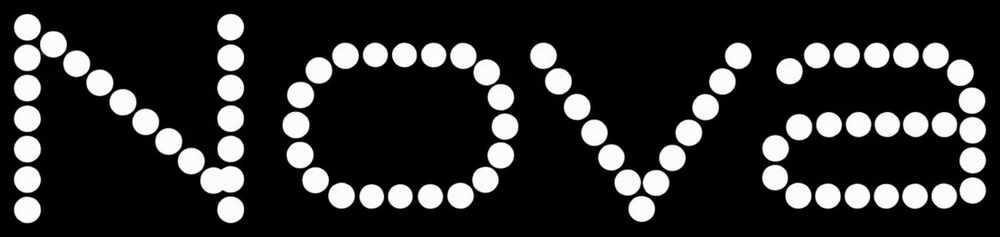
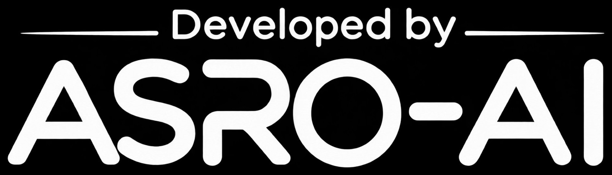

日本語の指示理解
細かなニュアンスを含む指示への追従を検証しました。

Asraは、ASROが自社開発するAIモデルです。そして今、初のモデル「Asra-Nova-Pico」を公開しました。日本語の指示を正確に理解し、コード生成にも強い、ASROの製品の中心で働くモデルです。

About
他社のモデルを借りるだけでは、製品の体験は他社の都合に左右されます。ASROは、自分たちの製品のために、自分たちでモデルをつくる道を選びました。それがAsraです。
そして今、Asra初のモデル「Asra-Nova-Pico」が誕生し、公開されました。開発はASRO AIが担当。まずはKuupをはじめとするASROの製品の中で、その力を届けていきます。
The Model
「Nova」の輝きと、「Pico」の軽やかさ。Asra-Nova-Picoは、ASRO AIがゼロから育てた初のモデルです。大きなモデルの物真似ではなく、ASROの製品の中でこそ力を発揮する、実直な知性を目指しました。


Tests
公開にあたって、Asra-Nova-Picoには日本語の指示理解、コード生成、会話の自然さなど、複数の観点でテストと検証を行いました。詳細な結果は、順次このページで公開していきます。
細かなニュアンスを含む指示への追従を検証しました。
実用的なプログラムの生成と、説明の正確さを確認しました。
日常の相談や雑談での応答の自然さを評価しました。
Features
日本語の細かなニュアンスと指示を、正確に読み取ります。
プログラムの生成と理解に強く、開発の場面でも活躍します。
KuupなどASROの製品の頭脳として、体験と一体で磨かれます。
Overview